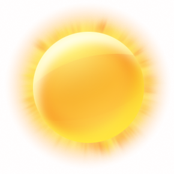

Главная
Подача заявлений
О нас
Локация
Маршрут
Cекретные ивенты

Ивент дня
16.09.22 жертвоприношение в 15.00 вход только с бейджиками от организации
Ивент дня
доступно только в оффлайн режиме
Ивент дня
доступно только в оффлайн режиме
Ивент дня
доступно только в оффлайн режиме